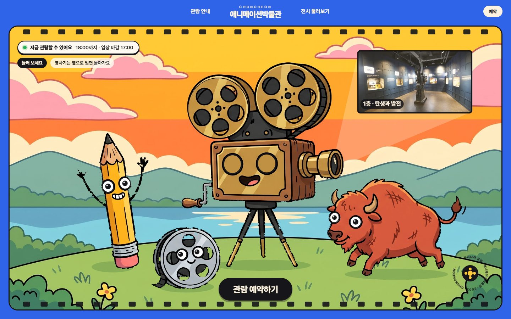
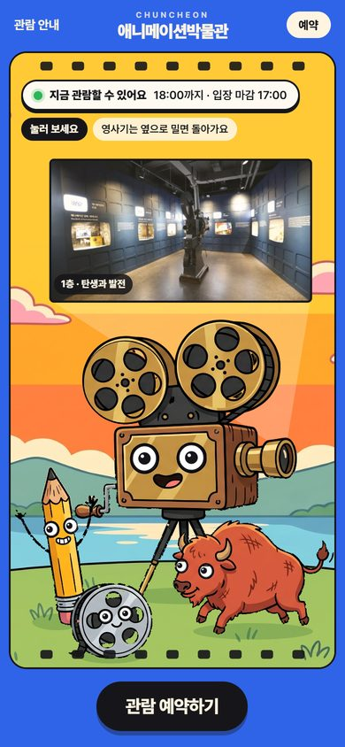
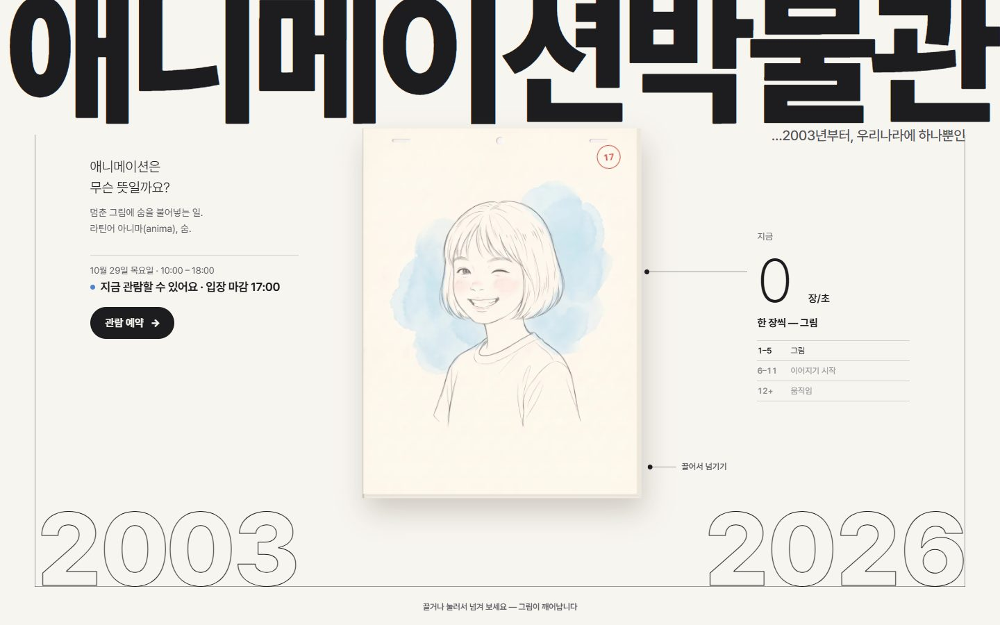
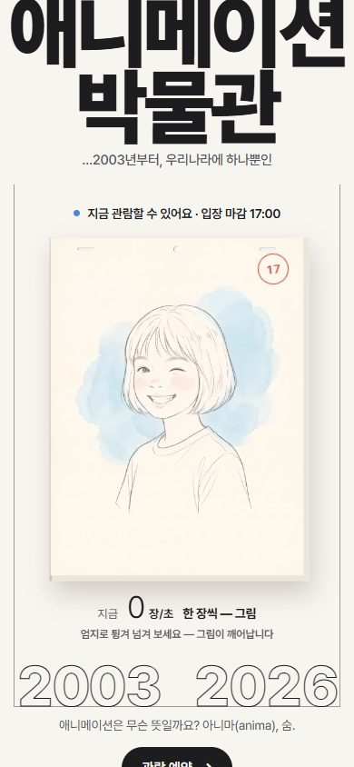
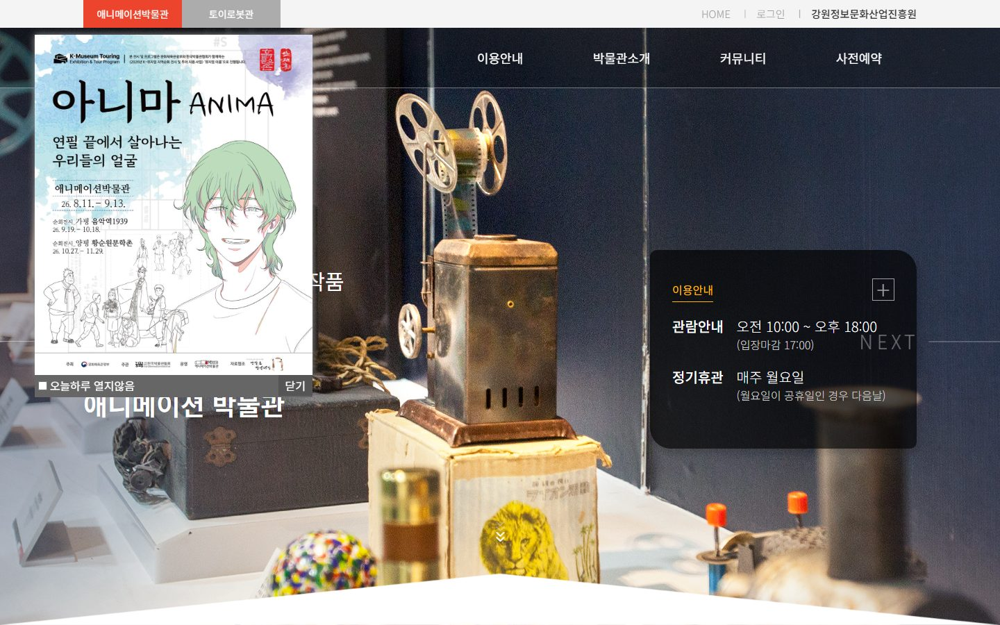
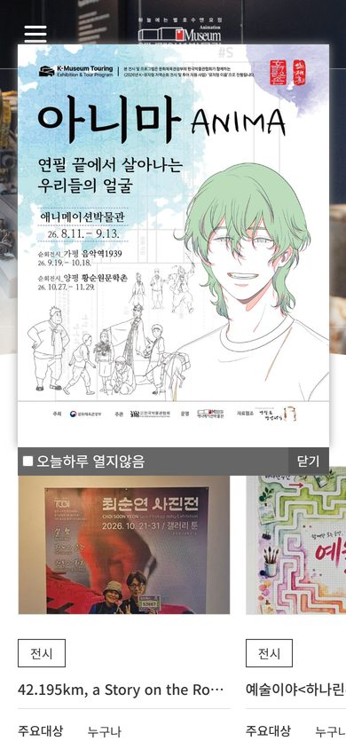

춘천 애니메이션박물관 · 홈페이지 리뉴얼 제안
지금 홈페이지는 첫 화면을 팝업이 가리고, 오늘 문을 여는지·얼마인지가 안 보입니다. 두 시안 모두 첫 화면에 오늘 운영 여부와 예약 버튼을 올렸습니다.
애니메이션은 ‘멈춘 그림에 숨을 불어넣는 일’입니다. 그래서 두 시안 모두 손을 대면 그림이 살아나는 첫 화면으로 만들었습니다 — 보는 박물관이 아니라 만져 보는 박물관.
관람시간·요금·층별 전시·순회전·오시는 길은 지금 홈페이지의 실제 내용과 사진으로 채웠습니다.


박물관 소장품인 영사기·연필·동굴벽화 들소·필름 릴이 만화 주인공이 됩니다. 눈이 손끝을 따라오고, 누르면 찌그러졌다 통 튀어 오르고, 영사기를 옆으로 밀면 릴이 돌며 진짜 박물관 사진을 하늘에 비춥니다.


기획전 《아니마 — 연필 끝에서 살아나는 우리들의 얼굴》에서 출발했습니다. 첫 화면의 플립북을 엄지로 튕기면 연필 그림이 구도선에서 시작해 눈을 뜨고 웃습니다. 넘기는 속도가 그대로 애니메이션의 속도가 됩니다.


1층 동굴벽화 전시의 첫 질문. 답은 라틴어 아니마(anima) — 숨. 멈춘 그림에 숨을 불어넣는 곳이라는 박물관의 정체성.
지금 순회 중인 기획전 《아니마》의 부제(포스터 속 글자). 애니메이션은 연필로 한 장씩 그린 그림에서 시작합니다 → 2안 플립북.
1층 전시의 실물들. 지금 홈페이지 첫 화면 사진도 영사기입니다 → 1안에서 이 소장품들이 캐릭터가 되어 손에 반응합니다.
그림 — 1안 캐릭터 그림은 AI(구글 Gemini)로 그린 뒤 부품으로 나눠 코드가 움직입니다(배경 1장 + 캐릭터 4개, 생성 6장 중 2장 사용). 2안 연필 그림은 같은 방식으로 한 장을 그려 고쳐 가며 11장을 만들었습니다. 박물관이 정식 캐릭터·원화를 주시면 그대로 바꿔 넣을 수 있습니다.
사진·글 — 전시 사진, 기획전 포스터, 관람시간·요금·교통은 지금 홈페이지(gica.or.kr/Ani)의 것을 그대로 썼습니다(2026년 10월 29일 기준).
움직임 — 외부 효과 도구 없이 직접 계산합니다(초당 60번 물리 계산). 폰에서는 장면 위를 세로로 쓸면 페이지가 그대로 내려갑니다. ‘움직임 줄이기’ 설정을 켠 기기에서는 저절로 움직이는 효과를 끕니다.